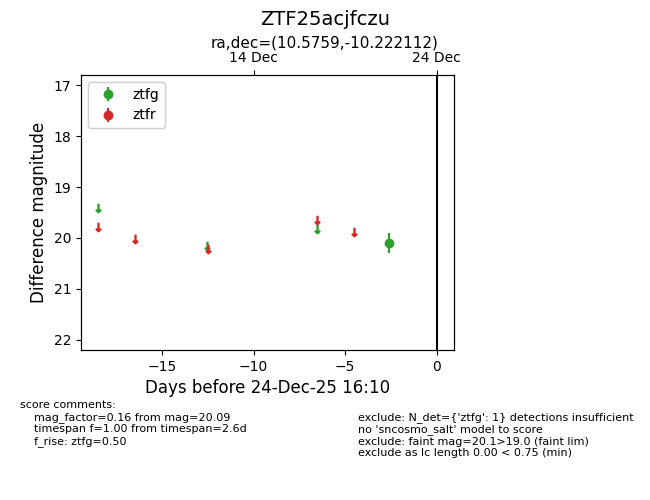
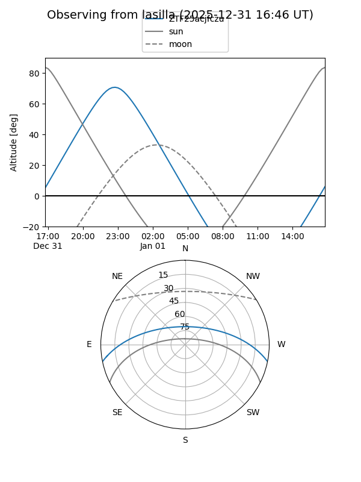
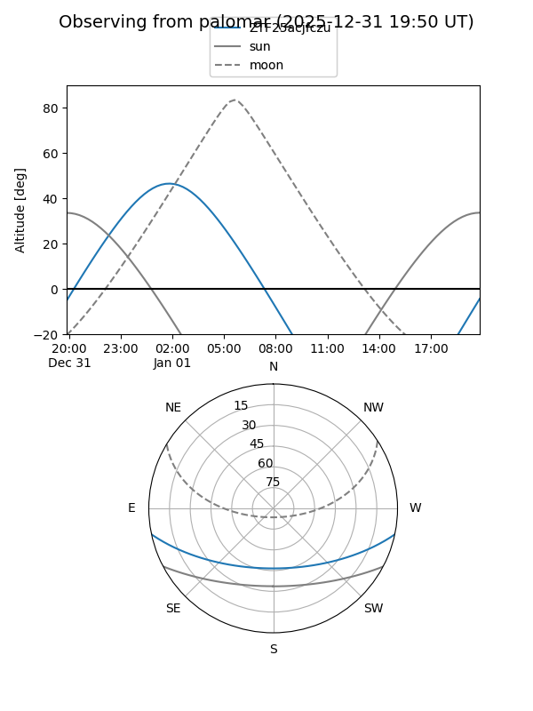

ZTF25acjfczu
Target ZTF25acjfczu at 2025-12-22 14:03
Aliases and brokers:
FINK: fink-portal.org/ZTF25acjfczu
Lasair: lasair-ztf.lsst.ac.uk/objects/ZTF25acjfczu
ALeRCE: alerce.online/object/ZTF25acjfczu
alt names
ZTF25acjfczu (ztf,fink_ztf)
Coordinates:
equatorial (ra, dec) = 10.5759,-10.22211
equatorial (HMS+DMS) = 00:42:18.21,-10:13:19.60
galactic (l, b) = (115.2430,-72.95735)
Flags:
Photometry:
last ztfg=20.09
1 ztfg detections
Lightcurve

Visibility


Additional plots